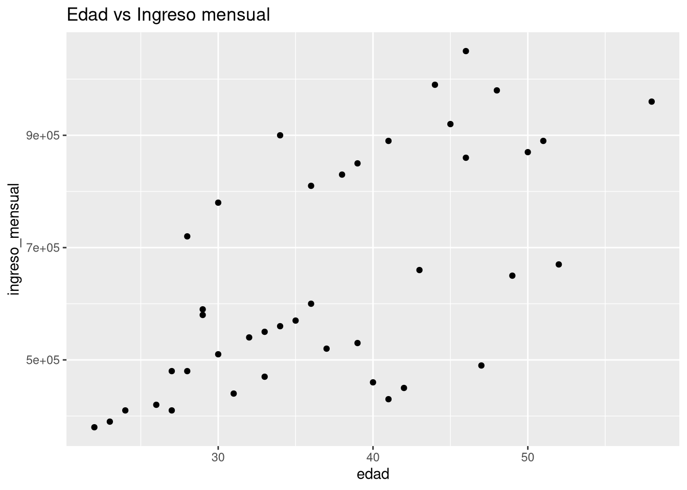
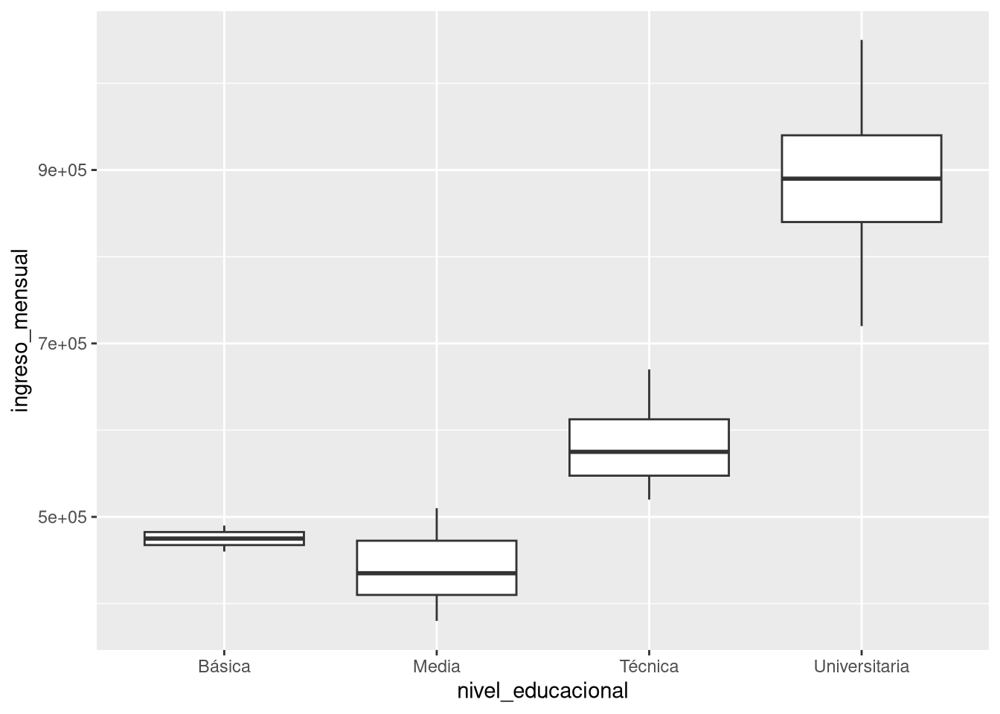
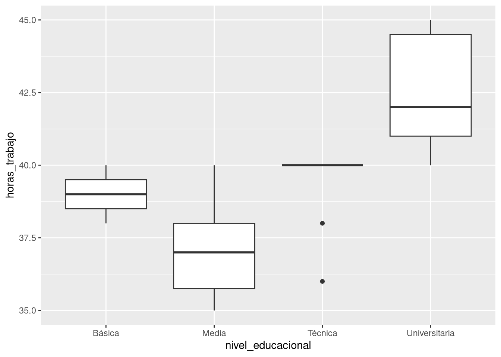
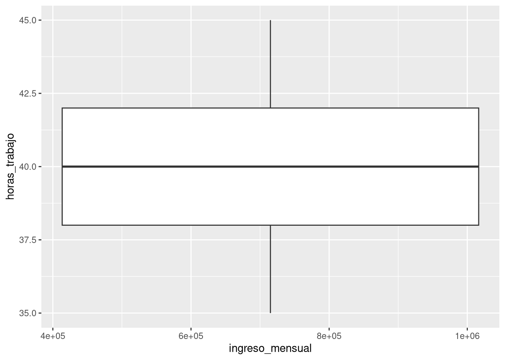

library(readr)
library(dplyr)
library(ggplot2)
library(knitr)Lección 2: Tipos de datos y estructura de la información
EPDI
Estudio de la estructura de una matriz de datos y clasificación de variables mediante el análisis del conjunto empleo50 utilizando R.
Resumen
En esta lección se analiza un conjunto de datos inspirado en la Encuesta Nacional de Empleo. Se estudian las nociones de observación, variable y niveles de medición, junto con la clasificación en variables categóricas y cuantitativas. Mediante herramientas básicas de R se exploran tablas, resúmenes descriptivos y representaciones gráficas. El objetivo es consolidar una comprensión estructural de los datos como fundamento del análisis estadístico posterior.

1 Origen institucional de los datos
The simple graph has brought more information to the data analyst’s mind than any other device.
— John Tukey
Los datos utilizados en esta lección (empleo50) son una versión didáctica simplificada de lo que habitualmente se obtiene a partir de encuestas oficiales de empleo. En Chile, la Encuesta Nacional de Empleo (ENE) es un estudio estadístico sistemático conducido por el Instituto Nacional de Estadísticas (INE), que busca medir las condiciones del mercado laboral a nivel nacional. Esta encuesta recoge información individual sobre edad, región, estado laboral, ingresos y horas trabajadas, entre otras variables, con el propósito de estimar indicadores como la tasa de ocupación y desempleo, identificar brechas laborales y apoyar el diseño de políticas públicas y programas sociales. El dataset empleo50 simula la estructura principal de estos datos reales para facilitar el análisis de tipos de variables y la comprensión de la estructura de una matriz de datos sin necesidad de trabajar con bases originales completas.
2 Preparar el entorno y cargar datos
La organización y descripción efectiva de los datos es el primer paso en la mayoría de los análisis. Esta sección presenta la matriz de datos para organizarlos, así como la terminología sobre los diferentes tipos de datos que se utilizará a lo largo de este libro.
Primero cargamos las librerías necesarias para la lección y operatividad de R. En este caso, usaremos dplyr para manipular datos y ggplot2 para graficar.
Los datos que utilizaremos corresponden a una muestra de 50 personas ocupadas en la Región de Valparaíso (fuente: Nueva Encuesta Nacional de Empleo, INE). Carguemos el archivo:
NotaExploración opcional en
R (Jupyter / Colab)
Los estudiantes que deseen experimentar, pueden cargar la base directamente a su computador utilizando:
3 Explorar la estructura de los datos
Cada fila es una observación (persona) y cada columna una variable. Con str() vemos el tipo de cada variable:
str(empleo)spc_tbl_ [49 × 8] (S3: spec_tbl_df/tbl_df/tbl/data.frame)
$ region : chr [1:49] "Metropolitana" "Biobío" "Valparaíso" "Araucanía" ...
$ sexo : chr [1:49] "Mujer" "Hombre" "Mujer" "Hombre" ...
$ edad : num [1:49] 28 34 42 19 51 24 37 46 33 55 ...
$ nivel_educacional: chr [1:49] "Universitaria" "Técnica" "Media" "Básica" ...
$ estado_laboral : chr [1:49] "Ocupado" "Ocupado" "Ocupado" "Desocupado" ...
$ tipo_contrato : chr [1:49] "Indefinido" "Plazo fijo" "Informal" "N/A" ...
$ ingreso_mensual : num [1:49] 720000 560000 450000 0 890000 410000 520000 1050000 470000 0 ...
$ horas_trabajo : num [1:49] 40 38 35 0 42 40 36 45 38 0 ...
- attr(*, "spec")=
.. cols(
.. region = col_character(),
.. sexo = col_character(),
.. edad = col_double(),
.. nivel_educacional = col_character(),
.. estado_laboral = col_character(),
.. tipo_contrato = col_character(),
.. ingreso_mensual = col_double(),
.. horas_trabajo = col_double()
.. )
- attr(*, "problems")=<externalptr> Aparecen variables numéricas (edad, ingreso_mensual) y categóricas (sexo, region). Esta distinción determina qué análisis podemos hacer.
Las primeras filas y la dimensión nos ayudan a entender su tamaño:
head(empleo, 5)# A tibble: 5 × 8
region sexo edad nivel_educacional estado_laboral tipo_contrato
<chr> <chr> <dbl> <chr> <chr> <chr>
1 Metropolitana Mujer 28 Universitaria Ocupado Indefinido
2 Biobío Hombre 34 Técnica Ocupado Plazo fijo
3 Valparaíso Mujer 42 Media Ocupado Informal
4 Araucanía Hombre 19 Básica Desocupado N/A
5 Metropolitana Mujer 51 Universitaria Ocupado Indefinido
# ℹ 2 more variables: ingreso_mensual <dbl>, horas_trabajo <dbl>dim(empleo)[1] 49 84 Diccionario de variables
Para saber qué mide cada columna la Tabla 1 es una descripción de cada variable de empleo50:
library(tibble)
dic_empleo <- tribble(
~variable, ~descripcion,
"region", "Región de residencia (categórica nominal).",
"sexo", "Sexo declarado (categórica nominal).",
"edad", "Edad en años (numérica discreta).",
"nivel_educacional", "Nivel educacional (categórica ordinal).",
"estado_laboral", "Condición laboral: Ocupado / Desocupado / Inactivo.",
"tipo_contrato", "Tipo de contrato si está ocupado (NA si no aplica).",
"ingreso_mensual", "Ingreso mensual en CLP (numérica).",
"horas_trabajo", "Horas trabajadas por semana (numérica)."
)
kable(dic_empleo, booktabs = TRUE)empleo50.
| variable | descripcion |
|---|---|
| region | Región de residencia (categórica nominal). |
| sexo | Sexo declarado (categórica nominal). |
| edad | Edad en años (numérica discreta). |
| nivel_educacional | Nivel educacional (categórica ordinal). |
| estado_laboral | Condición laboral: Ocupado / Desocupado / Inactivo. |
| tipo_contrato | Tipo de contrato si está ocupado (NA si no aplica). |
| ingreso_mensual | Ingreso mensual en CLP (numérica). |
| horas_trabajo | Horas trabajadas por semana (numérica). |
5 Resúmenes numéricos para variables cuantitativas
Para variables numéricas (cuantitativas), el resumen más útil suele ser el de cinco números: mínimo, primer cuartil, mediana, media, tercer cuartil y máximo. Lo obtenemos con summary():
summary(empleo) region sexo edad nivel_educacional
Length:49 Length:49 Min. :19.00 Length:49
Class :character Class :character 1st Qu.:29.00 Class :character
Mode :character Mode :character Median :37.00 Mode :character
Mean :38.12
3rd Qu.:46.00
Max. :61.00
estado_laboral tipo_contrato ingreso_mensual horas_trabajo
Length:49 Length:49 Min. : 0 Min. : 0.00
Class :character Class :character 1st Qu.: 420000 1st Qu.:36.00
Mode :character Mode :character Median : 540000 Median :40.00
Mean : 541633 Mean :33.39
3rd Qu.: 810000 3rd Qu.:40.00
Max. :1050000 Max. :45.00 Observa que summary() también nos da una tabla de frecuencias para las variables categóricas (como sexo). ¿Por qué crees que hace eso?
6 Tablas de frecuencias para variables categóricas
Cuando una variable es categórica, el resumen adecuado es una tabla de frecuencias. Podemos obtenerla con table():
table(empleo$sexo)
Hombre Mujer
24 25 ¿Cuántos hombres y cuántas mujeres hay en la muestra? Esta tabla responde esa pregunta de forma directa.
7 Filtrar datos para un análisis más específico
Supongamos que solo queremos estudiar a las personas ocupadas (que ya lo están) y además queremos quedarnos con quienes trabajan al menos 30 horas semanales. Usamos filter():
empleo_ocup <- empleo %>%
filter(horas_trabajo >= 30)¿Por qué es útil filtrar? Porque nos permite centrarnos en un subgrupo con características similares y evitar que los resultados se vean afectados por casos atípicos (como personas con trabajos de muy pocas horas).
Los datos de la Tabla 2 representan una matriz de datos, una forma práctica y común de organizarlos, especialmente si se recopilan en una hoja de cálculo. Cada fila de una matriz de datos corresponde a un caso único (unidad de observación) y cada columna a una variable.
En la práctica, es especialmente importante hacer preguntas aclaratorias para garantizar la comprensión de aspectos importantes de los datos. Por ejemplo, siempre es importante asegurarse de comprender el significado de cada variable y sus unidades de medida. Las descripciones de las variables de empleo50 se presentan en la Tabla 2.
empleo4 <- empleo |>
mutate(id = row_number()) |>
slice(c(1,2,3, n())) |>
select(id, everything())
kable(empleo4, booktabs = TRUE)empleo50.
| id | region | sexo | edad | nivel_educacional | estado_laboral | tipo_contrato | ingreso_mensual | horas_trabajo |
|---|---|---|---|---|---|---|---|---|
| 1 | Metropolitana | Mujer | 28 | Universitaria | Ocupado | Indefinido | 720000 | 40 |
| 2 | Biobío | Hombre | 34 | Técnica | Ocupado | Plazo fijo | 560000 | 38 |
| 3 | Valparaíso | Mujer | 42 | Media | Ocupado | Informal | 450000 | 35 |
| 49 | Metropolitana | Mujer | 36 | Técnica | Ocupado | Plazo fijo | 600000 | 40 |
Para variables numéricas: summary():
summary(select(empleo, edad, ingreso_mensual, horas_trabajo)) edad ingreso_mensual horas_trabajo
Min. :19.00 Min. : 0 Min. : 0.00
1st Qu.:29.00 1st Qu.: 420000 1st Qu.:36.00
Median :37.00 Median : 540000 Median :40.00
Mean :38.12 Mean : 541633 Mean :33.39
3rd Qu.:46.00 3rd Qu.: 810000 3rd Qu.:40.00
Max. :61.00 Max. :1050000 Max. :45.00 Entrega mínimo, cuartiles, media y máximo. Es útil para detectar rangos y valores atípicos.
Para variables categóricas: table():
table(empleo$region)
Antofagasta Araucanía Biobío Coquimbo Los Lagos
3 4 6 6 3
Los Ríos Magallanes Maule Metropolitana O’Higgins
3 3 4 8 3
Valparaíso
6 table(empleo$sexo)
Hombre Mujer
24 25 8 Relación entre dos variables cuantitativas: el diagrama de dispersión
Ahora queremos explorar si existe relación entre edad e ingreso mensual. Para dos variables numéricas, el gráfico adecuado es un diagrama de dispersión (scatter plot):
empleo_ocup <- filter(empleo, estado_laboral == "Ocupado")
ggplot(empleo_ocup, aes(x = edad, y = ingreso_mensual)) +
geom_point() +
labs(title = "Edad vs Ingreso mensual")
- Interpretación
- Cada punto es una persona. Observa si hay alguna tendencia: ¿a mayor edad, mayor ingreso? ¿Es una relación lineal? ¿Hay valores extremos?
9 Relación entre una variable numérica y una categórica: boxplots
Queremos comparar la distribución del ingreso mensual entre hombres y mujeres. Aquí tenemos una variable numérica (ingreso_mensual) y una categórica (sexo). El gráfico adecuado es el boxplot (diagrama de caja y bigotes):
ggplot(empleo_ocup, aes(x = nivel_educacional, y = ingreso_mensual)) +
geom_boxplot()
¿Qué observas? Compara las medianas (la línea dentro de la caja), la dispersión (tamaño de las cajas) y la presencia de valores atípicos (puntos fuera de los bigotes). ¿Hay diferencias notables entre sexos?
ggplot(empleo_ocup, aes(x = nivel_educacional, y = horas_trabajo)) +
geom_boxplot()
10 (Mal) Ejemplo: forzar un gráfico inadecuado
Finalmente, probemos un gráfico que no es apropiado para el tipo de variables que tenemos. Queremos relacionar ingreso mensual (numérica) con horas de trabajo (también numérica), pero usamos un geom_boxplot() que está diseñado para una numérica y una categórica:
ggplot(empleo_ocup, aes(x = ingreso_mensual, y = horas_trabajo)) +
geom_boxplot()
- ¿Por qué es un mal ejemplo?
- Porque el boxplot agrupa por los valores únicos de x, y al ser ingreso_mensual una variable continua con muchos valores distintos, cada grupo tiene muy pocos datos (a menudo uno solo). El resultado es un gráfico confuso que no muestra ninguna estructura útil. Este error es común cuando no se piensa en la naturaleza de las variables antes de graficar.
11 Cuestionario Grupal (Portafolio): Tipos de Datos
Utiliza estos enlaces para contestar las siguientes preguntas:
Según el documento “Metodología Encuesta Nacional de Empleo ENE 2020”, ¿Cuál es la edad de la población objetivo?
En referencia al mismo documento anterior, ¿Cómo define el Glosario del documento “Brecha de género”? Da un ejemplo que conozcas donde se presente esta brecha.
Lee atentamente este extracto:
“Tal y como se define en las normas internacionales, existen tres categorías principales, personas ocupadas, personas desocupadas y personas fuera de la fuerza de trabajo, por lo que la población activa está formada por las personas en edad de trabajar que participan activamente en el mercado de trabajo, es decir la suma de las personas ocupadas y las desocupadas (personas cesantes y personas que buscan trabajo por primera vez). En conjunto, estos dos grupos de población en edad de trabajar representan la oferta de mano de obra para la producción de bienes y servicios a cambio de la remuneración o beneficio que existe en un país en un momento dado. Por otro lado, las personas fuera de la fuerza de trabajo son aquellas personas en edad de trabajar que durante el período de referencia no estaban ni en la ocupación ni en la desocupación”.
A partir de este extracto, explica quién es una persona fuera de la fuerza de trabajo y da un ejemplo concreto.
- ¿Es lo mismo estar desempleado que estar fuera de la fuerza de trabajo?
- ¿Por qué el último gráfico (ingreso vs horas) es un mal ejemplo? ¿Qué gráfico sería el adecuado?